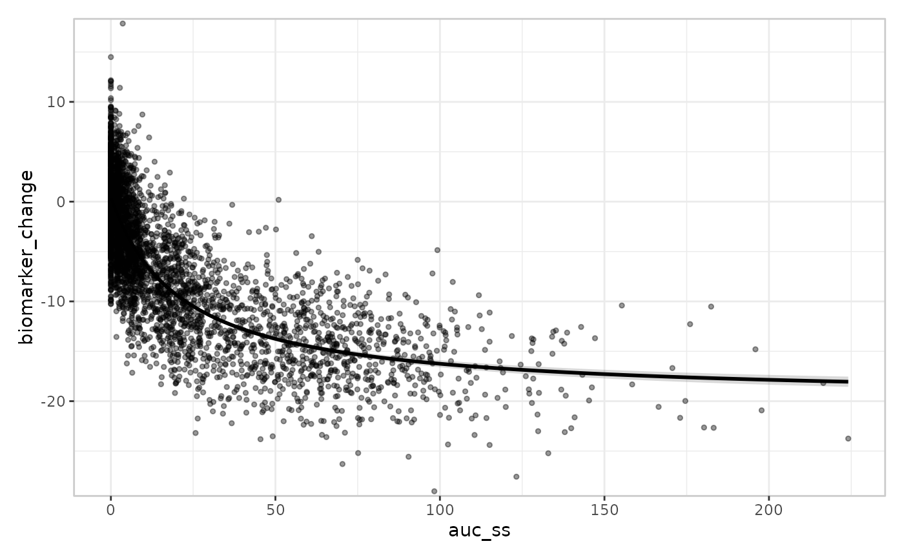
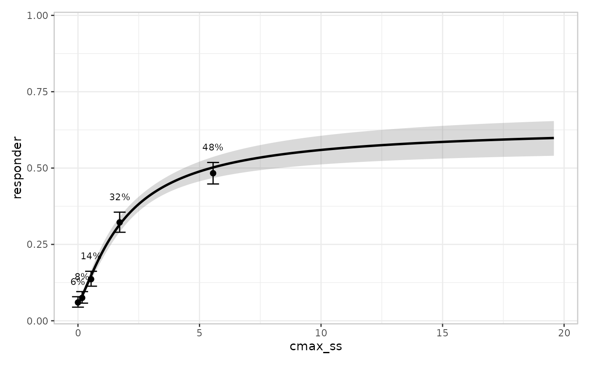
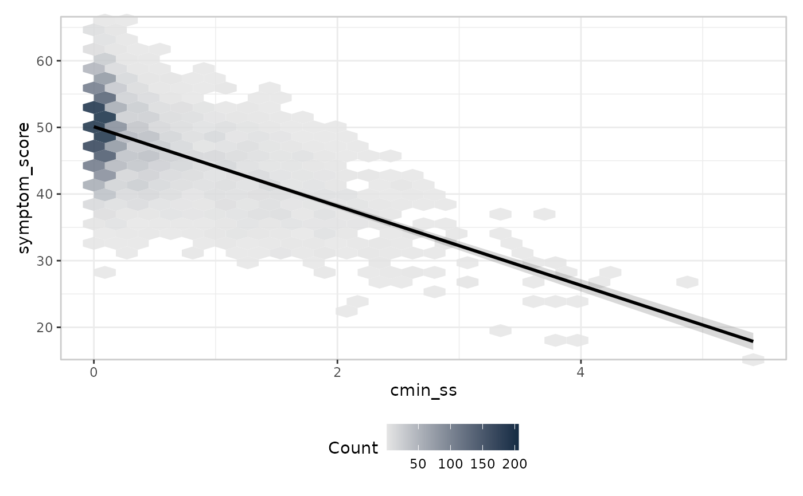
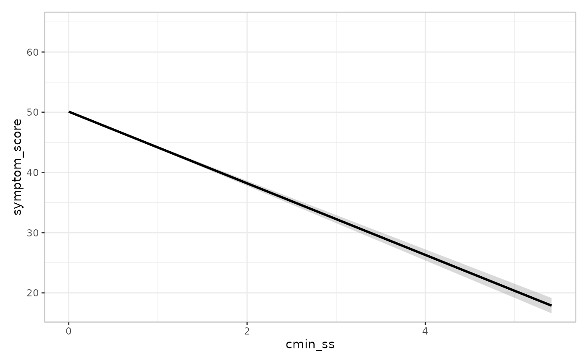

A simulated dataset with multiple exposure columns and response columns spanning all three response types, designed to demonstrate every layer of the erplots mini-language without depending on any companion model-fitting package for the data itself.
Format
A tibble with 4,000 rows (one per simulated subject) and 15 columns:
- subject_id
Integer subject identifier,
1:4000.- dose_mg
Numeric assigned dose in mg: one of
0,10,30,100,300.- dose_group
Ordered factor version of
dose_mg("Placebo"<"10 mg"<"30 mg"<"100 mg"<"300 mg"), about 800 subjects per level. A naturalstratify_by/grouping column.- study_id
Factor,
"Study 1"-"Study 4"(400/800/1200/1600 subjects respectively). A purely administrative label, independent of dose/exposure/response by construction – see Details.- bodyweight_kg
Numeric bodyweight covariate.
- age_years
Numeric age covariate.
- sex
Factor covariate,
"F"/"M".- renal_function
Factor covariate,
"Normal"/"Mild"/"Moderate".- auc_ss
Numeric exposure: steady-state AUC (cumulative exposure).
0for placebo subjects.- cmax_ss
Numeric exposure: steady-state peak concentration.
- cmin_ss
Numeric exposure: steady-state trough concentration.
- biomarker_change
Continuous response, Emax-shaped in
auc_ss.- responder
Binary (0/1) response, Emax-shaped on the logit scale in
cmax_ss.- adverse_event
Binary (0/1) response, log-linear (plain logistic regression, no saturation) in
auc_ss.- symptom_score
Continuous response, linear in
cmin_ss.- n_events
Integer count response, log-linear Poisson rate in
auc_ss.
Details
The three exposure columns (auc_ss, cmax_ss, cmin_ss) come from a
simplified, internally-consistent PK-flavoured simulation (individual
clearance driven by bodyweight_kg/renal_function, with between-subject
variability) rather than a literal pharmacokinetic model – good enough to
produce a plausible, correlated exposure triple, not a validated PK
simulator.
Each response column is paired with the exposure column and mechanism that makes it a natural fit for one modelling scenario:
| Response | Exposure | Scenario |
biomarker_change | auc_ss | Emax (continuous) |
responder | cmax_ss | Emax (binary) |
adverse_event | auc_ss | logistic regression |
symptom_score | cmin_ss | linear regression |
n_events | auc_ss | Poisson regression |
At 4,000 rows, a raw-point data-layer overlay
(er_style_data_overlay()) visibly overplots – see the relevant example
below, which uses er_style_data_hex() instead.
study_id ("Study 1"-"Study 4", unevenly sized: 400/800/1200/1600
subjects) is included purely as a convenient filtering column: it's
independent of dose, exposure, and response by construction, so
subsetting to a single study (e.g. dplyr::filter(erplots_data, study_id == "Study 1")) gives a much smaller sample that still spans the full
dose range – useful for illustrating how the same plot looks with less
data (e.g. whether a raw-point overlay is legible again once N drops, or
whether er_style_data_hex()'s bins become too sparse to be useful).
Examples
erplots_data
#> # A tibble: 4,000 × 16
#> subject_id dose_mg dose_group study_id bodyweight_kg age_years sex
#> <int> <dbl> <ord> <fct> <dbl> <dbl> <fct>
#> 1 1 0 Placebo Study 4 47.9 34 F
#> 2 2 0 Placebo Study 1 51.5 47 F
#> 3 3 0 Placebo Study 3 74.2 61 F
#> 4 4 0 Placebo Study 2 76.5 38 F
#> 5 5 0 Placebo Study 3 40 49 M
#> 6 6 0 Placebo Study 2 57.5 25 M
#> 7 7 0 Placebo Study 4 70.5 36 F
#> 8 8 0 Placebo Study 3 69 48 F
#> 9 9 0 Placebo Study 3 56.7 62 M
#> 10 10 0 Placebo Study 1 81.9 62 M
#> # ℹ 3,990 more rows
#> # ℹ 9 more variables: renal_function <fct>, auc_ss <dbl>, cmax_ss <dbl>,
#> # cmin_ss <dbl>, biomarker_change <dbl>, responder <int>,
#> # adverse_event <int>, symptom_score <dbl>, n_events <int>
# Logistic regression: adverse_event ~ auc_ss
if (requireNamespace("erglm", quietly = TRUE)) {
mod <- erglm::erglm_model(adverse_event ~ auc_ss, data = erplots_data, family = binomial())
erplots_data |>
er_plot(auc_ss, adverse_event) |>
er_plot_add_model(mod) |>
er_plot_add_summary(model = mod) |>
plot()
}

# Linear regression: symptom_score ~ cmin_ss
if (requireNamespace("erglm", quietly = TRUE)) {
mod <- erglm::erglm_model(symptom_score ~ cmin_ss, data = erplots_data, family = gaussian())
erplots_data |>
er_plot(cmin_ss, symptom_score) |>
er_plot_add_model(mod) |>
plot()
}

# Linear regression: symptom_score ~ cmin_ss, with a hex-binned data layer
if (requireNamespace("erglm", quietly = TRUE) && requireNamespace("hexbin", quietly = TRUE)) {
mod <- erglm::erglm_model(symptom_score ~ cmin_ss, data = erplots_data, family = gaussian())
erplots_data |>
er_plot(cmin_ss, symptom_score) |>
er_plot_add_model(mod) |>
er_plot_add_data(style = er_style_data_hex) |>
plot()
}

# Filtering to one study (n = 400) for a smaller-sample illustration: a
# Poisson regression n_events ~ auc_ss with scatter plot data layer
if (requireNamespace("erglm", quietly = TRUE)) {
small_data <- erplots_data[erplots_data$study_id == "Study 1", ]
mod <- erglm::erglm_model(n_events ~ auc_ss, data = small_data, family = poisson())
small_data |>
er_plot(auc_ss, n_events, response_type = "count") |>
er_plot_add_model(mod) |>
er_plot_add_data() |>
plot()
}
